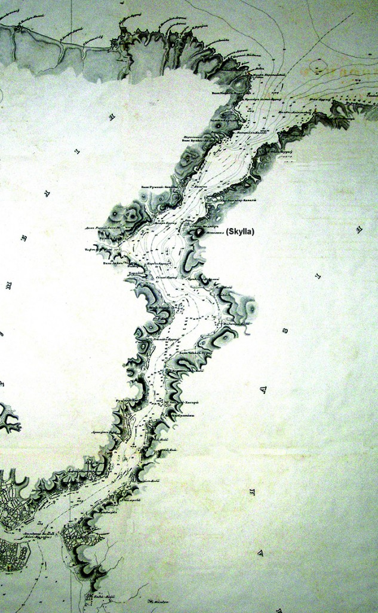

Виповнено текстологічний аналіз давньогрецького тексту «Одіссеї» Гомера і доведено, що Скілла, Харибда й Планкти знаходилися в Босфорі. Завдяки гідрологічному експерименту на дрібній воді з’ясовано місце дії віру Харибди та положення Скілли і Планкт. За свідченням Гомера величезний вір Харибда в Босфорі діяв у 629-591 рр. до н.е. Рівень води у Чорному морі раптово (за 3-4 тижні) понизився на 5-10 м.(Фанагорійська регресія) і напрям течії води в Босфорі став протилежним сучасному. Через 38 р. рівень води у Чорному морі так само раптово піднявся, і сучасний напрям течії в Босфорі відновився.
Ключові слова: Одіссей, Цирцея, Скілла, Харибда, Планкти, Схерія, Еет.
З’ясування питання де знаход Скілла і Харибда, тобто Гераклові стовпи, важливе для вирішення двох проблем: вияснення де плавав Одіссей і де знаходилася Атлантида. Як відомо, у Діалогах Платона «Тімей» і «Критій» сказано, що Атлантида знаходилася за Геракловими стовпами. Переважна більшість дослідників схиляється до того, що Одіссей плавав у Середземному морі, а Гераклови стовпи знаходилися, у протоці Гибралтар або в Месcинській протоці між островом Сицілією та Апеннінським півостровом. Це спонукало багатьох дослідників шукати Атлантиду в Атлантичному океані, або в Середземному морі. Щоправда першим науковцем, який припустив, що Одіссей плавав у Чорному морі, а Гераклові стовпи знаходилися в протоці Босфор, був академік К.М. Бер. Другий важливий крок, щодо вирішення Гомерівського питання, зробив А.Ф. Лосєв, який написав першу біографію Гомера, наближену до реальної. Найбільшим надбанням цієї роботи було те, що він визнав Гомера іманентним автором, стверджуючи, що всі відомості про життя Гомера слід шукати у його творах, але А.Ф. Лосєв не надав ідеї як це робити. В 2001 р. вийшла моя книга «Гомер. Імманентна біографія», яку було перекладено на англійську мову (Літер. ред. проф. В.Б. Черницький). Завдяки розробці імманентній методики дослідження, вдалося встановити дати 8-ми основних етапів життя Гомера, його кіммерійське походження, і з’ясувати маршрут плавання Одіссея. [3, 7]
Для того, щоб зрозуміти де знаходилися Скілла і Харибда, достатньо звернутися лише до аналізу слів Цирцеї у гекзаментрах 69-70, XII-ї пісні «Одіссеї», щодо проходження Арго блукаючих скель Планкт, розташованих біля них:
οἴη δὴ κείνη γε παρέπλω ποντοπόρος νηῦς, 70 Ἀργὼ πᾶσι μέλουσα, παρ Αἰήταο πλέουσα. [9]
Переклад Бориса Тена тут і нижче:
Тільки один ті скелі минувши корабель мореплавній, 70 Всюди уславлений Арго, коли від Еета вертався. [1]
У ключовому 70 гекзаметрі слова «Ἀργὼ πᾶσι μέλουσα» мають точний переклад в словнику І.Х. Дворецького [2] «Всім відомий Арго», слово «παρ» – «від, з боку» і «πλέουσα = πλέω» – «пливе». Таким чином, дослівний переклад може бути таким: «Всім відомий Арго, що плив від Еета». Сьогодні ніхто не заперечує той факт, що Арго плавав до Еета за золотим руном на Кавказ і, повертаючись до Греції, він міг зустріти Планкти, Скіллу і Харибду в Босфорі або у Дарданеллах. Таким чином, лише один 70-й гекзаметр XII пісні «Одіссеї» дає відразу точну орієнтацію, що Одіссей плавав у Чорному морі. Далі, спираючись на свідчення, щодо ширини протоки:
“᾽τὸν δ᾽ ἕτερον σκόπελον χθαμαλώτερον ὄψει, Ὀδυσσεῦ. 120 πλησίον ἀλλήλων· καί κεν διοϊστεύσειας. [9]
Другу скалу, невисоку, побачиш ти там, Одіссею, Близько від першої, так як із лука стрілою (двічі) сягнути. [1]
Тут у перекладі Бориса Тена зроблене таке уточнення тому, що ширина протоки була у дві довжини пострілу стріли: δι = δίς [2]. Тобто Гомер обрав слово δι-οϊστεύσειας саме для того, щоб у ньому містилася ця вказівка. Таким чином, мова йде про те, що ширина протоки між скелями Скілли і Харибди знаходилася у межах 700-800 м. За даними Лоції мінімальна ширина Босфору дорівнює 4 кбт., або 741 м. [8, с. 11], а Дарданелл – 7 кбт., або 1297 м. [8, с. 129]. Тобто Скілла, Харибда і Планкти знаходилися в Босфорі. Відповідь, де саме знаходилися вони, була отримана експериментальним шляхом, проливанням в зворотному напрямку (з Мармурного у Чорне море) дрібної води через модель протоки в масштабі 1:20000. Контури протоки відновлені по першій точній карті Манганарі 1834 р., копія якої була запозичена у Миколаївській обсерваторії [10].
Зрозуміло, що при цьому не йшла мова про точне фізичне моделювання процесу, оскільки тут не можна було витримати критерії Фруда і Струхаля, тобто відновити інфразвуковий автоколивальний процес роботи Харибди з періодом у 8 годин, описаний Гомером в «Одіссеї» (XII, 105).
{kind=link}
{kind=link}
Рис. 1. Течія в протоці Босфор при поглинанні Харибди – зверху Чорне море.
Але завдяки моделюванню вдалося відновити першій етап виникнення величезного виру і знайти його місце в протоці. По-перше, з’ясувалося, що Планкти збереглися і вони знаходяться біля азіатського берегу і захищали від Харібди кораблі, які притулялися до Скілли. На карті Манганарі сучасна гора Юша називалася Велетнем, ймовірно, у часи Гомера це був доволі високий грязьовий вулкан. На Рис. 1 показано, як працює Харибда в режимі поглинання. Після цього вже неважко було відновити і другу фазу автоколивального процесу, тобто виверження Харибди. Течія, відштовхувалася від правого, азіатського, берегу Босфору, і перегороджувала основний потік, поки вир Харибда закручувався в годинниковому напрямку. Харибда, таким чином, розділяла протоку на дві частині, південну довжиною у 20 км і північну – у 10 км. Коли в південній частині накопичувалася вода, вона перескакувала через цей бар’єр, проривалася по центру протоки, і наштовхувалася на зустрічний потік Харибди, тоді виникав величезний сплеск, зафіксований Гомером (XII, 235-239). Так само він точно описав начальну фазу поглинання Харибди, коли величезний вир діаметром, біля 500 м, оголяв дно неглибокої (40-50 м) протоки з водоростями (XII, 240-243).
{kind=link}
Рис. 2. Течія в протоці Босфор при виверженні Харибди.
Ось які поради дала Цирцея Одіссею щодо роботи Харибди (XII, 105-110):
105 Тричі ковтає на день і тричі на день викидає З себе. Отож не наблизься, коли вона має ковтнути, Бо не врятує тоді тебе навіть землі потрясатель. Ближче до Скілли тримайся й повз неї жени якнайшвидше Ти корабель свій, бо краще супутників шість загубити, 110 Аніж усіх заодно з кораблем їх утратити разом. [1]
З Рис. 1 і 2 видно, що іншого шляху пройти з Чорного моря у Мармурове не було, окрім як притиснутись до Скілли і під захистом Планкт проскочити мимо Харибди. Але це можна було зробити лише під час виверження Харибди, як радила Цирцея,– чому? По-перше, тому, що під час ковтання вода між Планктами і Скіллою втягувалася у вир і дно протоки оголялося так, що корабель міг наскочити на скелі і розламатися,- ефект блукаючих скель. По-друге, під час експерименту було добре видно, як маленькі тріски по виходу між Планктами і Азіатським берегом, відразу втягувалися у вир (Рис. 1). Навпаки, під час виверження, рівень води між Планктами і берегом підіймався, а супротивну течію можна було подолати, йдучи біля берегу (Рис. 2), де швидкість течії була меншою, а також швидко гребти проти течії, що і радила Цирцея Одіссею. Крім того, зрозуміло, що термін дії виверження був у двічі коротший за термін поглинання. Тому треба було просуватися дуже швидко і впоратися за 1,5-2 години. Коли вичерпувався, накопичений при поглинанні у нижній частині Босфору об’єм води, течія вирівнювалася, і весь цикл повторювався знову (Рис. 1).
Автор розшифрував більше 400 таємних лапідарних написів Гомера, знайдених археологами в Північному Причорноморї за останні 200 р. В декількох з них Гомер зафіксував, що Харибда діяла з 629 до 591 рр. до н.е. [4] Можна припустити, що це ї був 38 р. термін дії Фанагорійської регресії, коли рівень води в Чорному морі за різними оцінками понижався на 5-10 м. Причому дивовижним є те, що це зниження і підйом відбулися для такого циклопичного явища порівняно швидко – біля 3-4-х тижнів, за даними Гомера. У роботі [5] зроблено припущення, що це пов’язано з проковзуванням земної кори по в’язкому напіврідкому шару магми (астеносфера мантії) під зовнішнім або внутрішнім впливом. Таким чином, Гераклові стовпи біля Скілли (сучасна гора Юша) і Харибди (Сариєр) знаходилися у Босфорі. Гомер також довів, що Атлантида знаходилася у сучасному Криму біля Євпаторії [6]. Крім того, саме через 38-річну дію Харибди Чорне море у греків спочатку отримало назву Понта Аксінського, тобто «Негостинного», тому, що торгівельним суднам легко було попасти в нього і майже неможливо було вийти. Згодом, коли Харибда зникла, Понт став називатися Евксинським, тобто «Гостинним».
Джерела та література: 1. Гомер. Одіссея.- Харків: Фоліо, 2004. 2. Дворецький І.Х. Давньогрецький-російський словник. – Москва. 1958. 3. Золотухін А.І. Гомер. Іманентна біографія.– Миколаїв, АТОЛ, 2001. 4. Золотухін А.І. «Гомер і Атлантида». 2012: http://homerandatlantis.com 5. Золотухін А.І. Автограф Ахілла. http://homerandatlantis.com/?p=978 6. Золотухін А.І. «Дикий Сад» – це Алібант Гомера: http://homerandatlantis.com/?p=113&lang=UK 7. Zolotukhin A.I. Homer. The immanent biography. – Mykolaiv, Vozmozhnosty Kimmerii, 2006. http://www.homerandatlantis.com/?p=380&lang=en 8. Лоція Мармурного моря і проток Босфору й Дарданелл, М. – 1988. 9. Homer. Odyssey: http://www.perseus.tufts.edu/hopper/text? doc=Perseus%3Atext%3A1999.01.0135%3Abook%3D12%3Acard%3D36 10. Манганарі Е. Атлас Чорного моря. Депо карт. – Миколаїв, 1841.